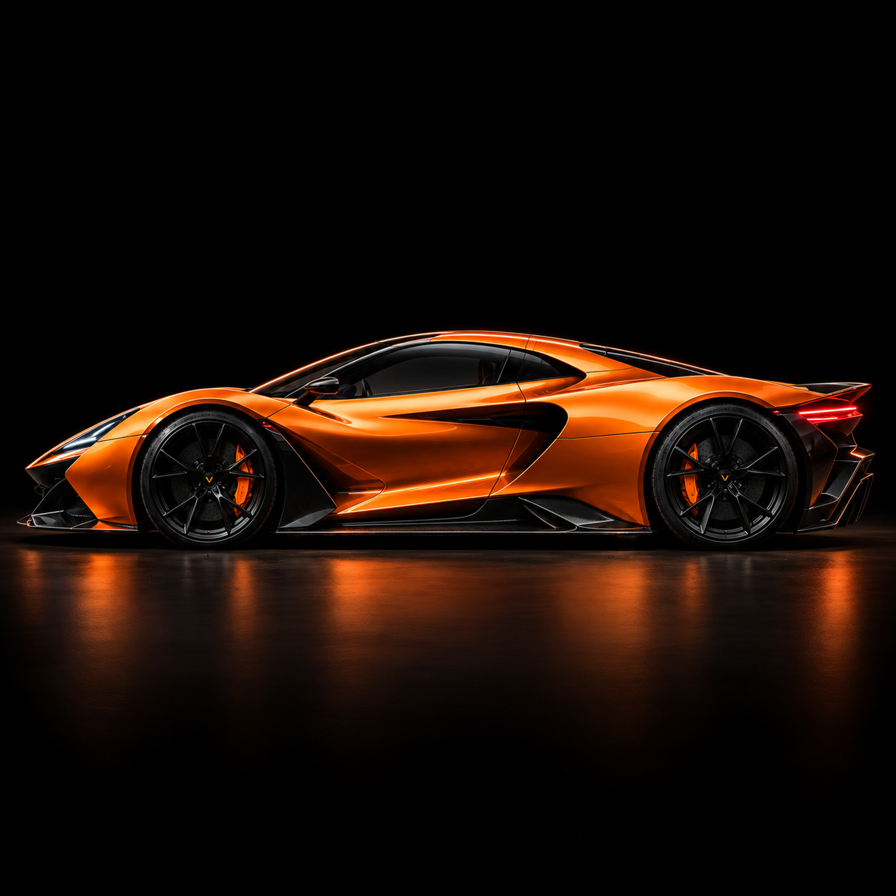
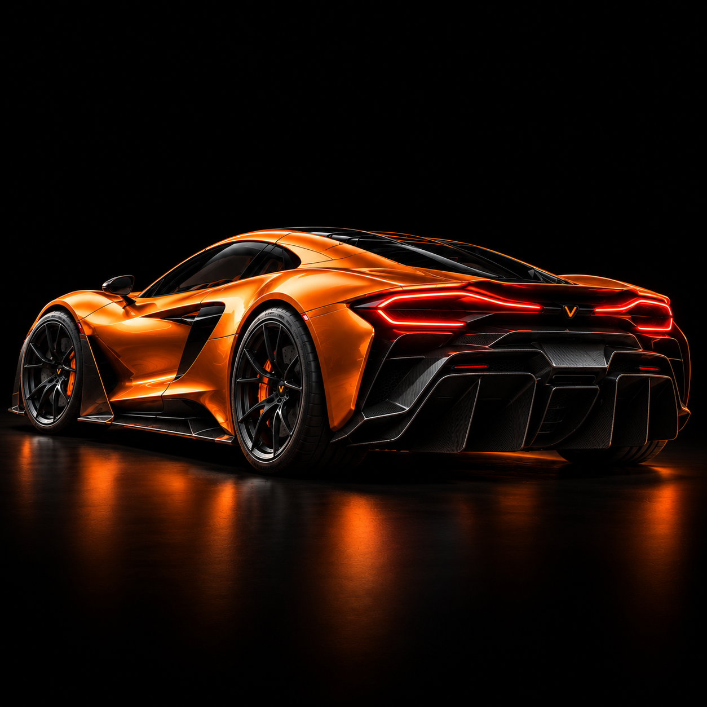
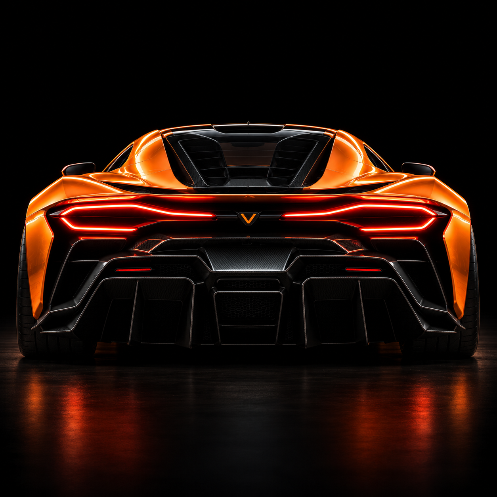

O futuro da performance não espera.
MAIS QUE UM CARRO.
UMA NOVA REFERÊNCIA.
O VÉLOCE ONE é um hipercarro elétrico conceitual desenvolvido para explorar os limites da tecnologia, da dinâmica veicular e da aerodinâmica.

A visão da marca parte de um princípio: velocidade só emociona quando é consequência de boa engenharia. Cada decisão, da arquitetura elétrica às superfícies da carroceria, serve a um único propósito, entregar uma resposta imediata e precisa ao motorista.
O projeto busca equilíbrio entre racionalidade e emoção: massa baixa e bem distribuída, tração inteligente, aerodinâmica integrada ao desenho e um cockpit focado em quem conduz. Um conceito para provocar a pergunta de até onde um carro elétrico pode ir.
{{ p.t }}
{{ p.d }}
ESCOLHA O SEU MODO.
{{ mode.d }}
A INTELIGÊNCIA DA VELOCIDADE.
DESIGN EXTERNO
Proporções baixas e largas, linha de teto rebaixada e postura agressiva. As superfícies esculpidas conduzem o olhar da proa à traseira e criam sombras que reforçam o volume sobre as rodas.


ASSINATURA LUMINOSA
Faróis LED finos e afilados na dianteira. Na traseira, uma lanterna contínua que atravessa a carroceria e desenha a largura do carro no escuro.
{{ d.t }}
{{ d.d }}
CADA DETALHE IMPORTA.
VÉLOCE ONE · Ficha técnica conceitual. Todos os dados são fictícios e representam estimativas de projeto.
{{ spec.t }}
{{ spec.note }}
A ARTE DO MOVIMENTO.
NÓS NÃO SEGUIMOS O FUTURO.
NÓS O PROJETAMOS.
{{ b.t }}
{{ b.d }}
VÉLOCE é uma marca fictícia. Esta narrativa é um exercício conceitual e não descreve uma empresa, pessoas ou instalações reais.